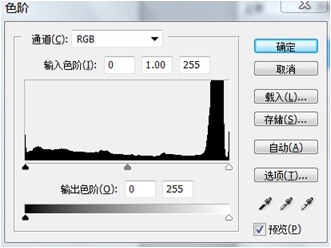
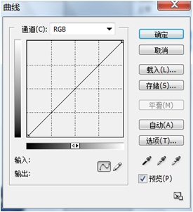

圖像調整
色阶：
输入色阶下方的3个文本框用别用来设置：暗调、中间调、高光区域的输入色阶，以调图像的亮度和对比度；
输出色阶：可以定义新的暗调和亮调高光值；
对于高亮度的图像，用鼠标将左侧的黑色滑块向右拖曳，可以增大图像中暗调的范围，使图像变暗；
对于光线较暗的图像，用鼠标将右侧的白色滑块向左拖曳，可增大图像中高光区域的范围，使图像变亮；
用鼠标将中间的灰色滑块向右拖曳，可以减少图像中的中间色调的范围，从而增大图像的对比度；同理，若用鼠标将中间的灰色滑块向左拖曳，可以增加中间色调的范围，从而减少图像的对比度；
曲线
可以调整图像各个通道的明暗程序，
水平轴：输入色阶，代表图像色彩原来的高度值；
垂直轴：输出色阶，代表图像调整后的颜色值；
对于RGB颜色模式的图像，曲线显示0－255之间的强度值，暗调0位于左边。
颜色饱和度：纯度
颜色映射：反向、色调均化、阈值、色调分离；
颜色调整：色相、饱和度、替换颜色、曲线；
直方图用图形表示图像的每个亮度级别的像素数量,显示了像素在图像中的分布情况.通过查看直方图,我们就可以判断在图像的阴影\中间值和高光中包含的细节是否充足,以便对其进行适调整;
直方图的左侧代表了图像的阴影区域;
直方图的中间代表了中间调;
直方图的右边代表了高光区域
从阴影(黑色,色阶0)---高光(白色,色阶255)
直方图中的山脉代表了图像的数据,山峰则代表了数据的分布方式,较高的山峰表示该区域包含的像素较多;
色阶ctrl+l命令中包含了一个直方图,可以做为参考,但不能实时更新,所以调整时,还是需要打开直方图面板观察;
曲线(ctrl+M)也是用于调整图像色彩与色调的工具,它经色阶更加强大,色阶只有3个调整功能,白场\黑场\灰度系数,而曲线则允许在图像的整个色调范围内(从阴影到高光,左下角到右上角)最多调整14个点.在所有的调整工具中,曲线可以提供最为精确的调整结果.
水平的渐变颜色条:输入色阶,代表了的原始强度值;
垂直的渐变颜色条为输出色阶:它代表了调整曲线后像素的强度值;
在调整曲线前,这两个数据是相同的.当在曲线上单击,添加一个控制点,向上拖动该点,此时输出色阶的值会变大,大于输入色阶值(整个色阶范围为0-255,0代表全黑,255代表全白,因此,色阶值越高,色调越亮)
同样的,向右下移动,则会变暗
可用方向键配合调整;